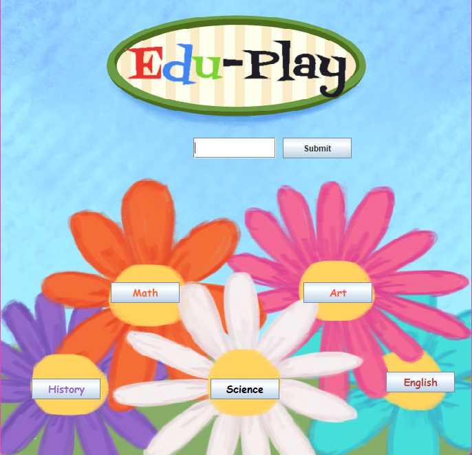
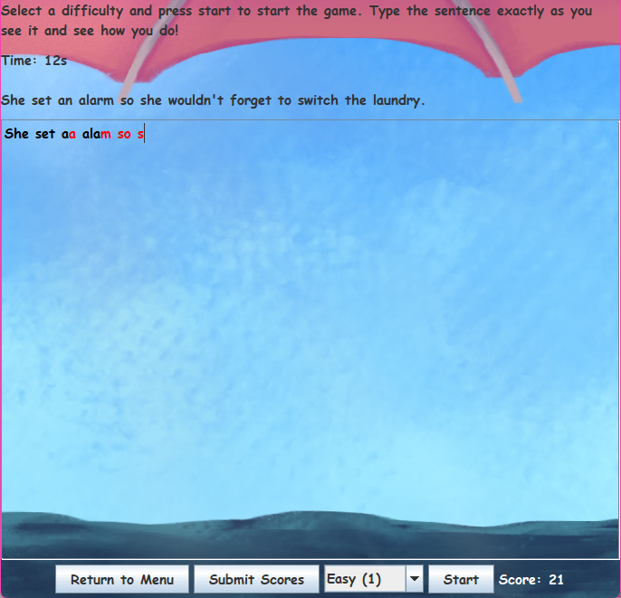
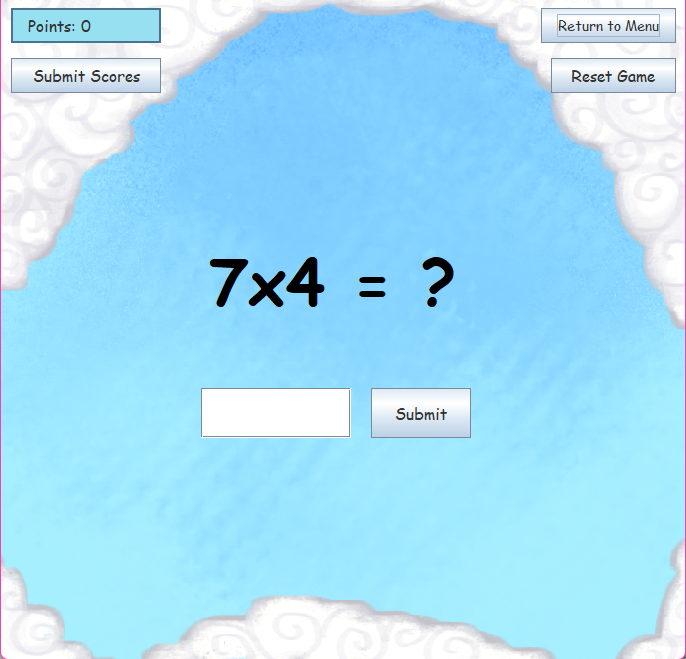
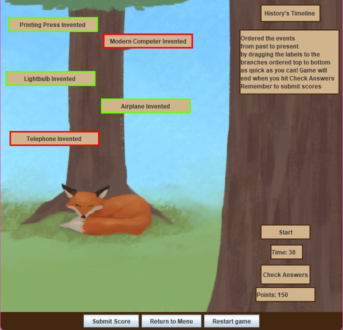
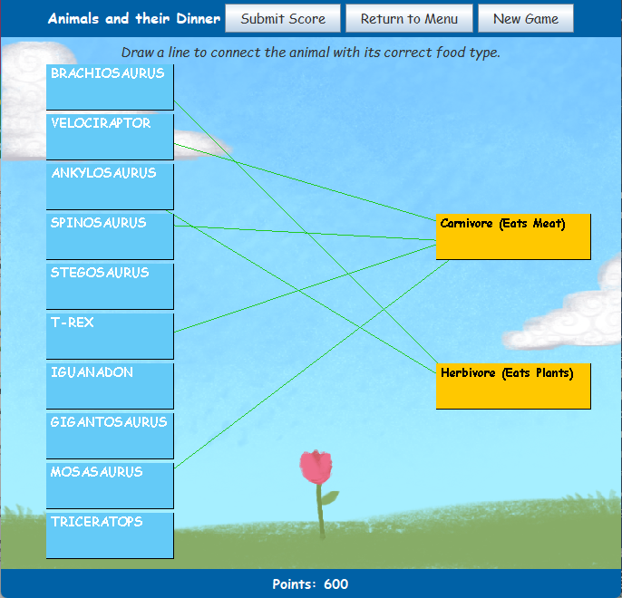
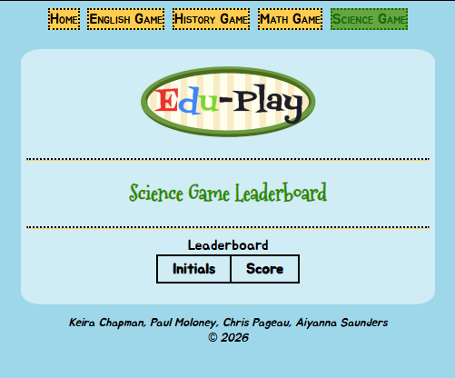

Edu-Play
Co-Created with Paul Moloney, Chris Pageau, and Aiyanna Saunders






March - May 2026
Overview
Edu-Play is an educational program that helps children in grades first through fifth understand and learn math, science, English, history, physical education, and creativity through virtual games.
The program has a game for each subject that is replayable as well as tracks scores upon completion.
This encourages children to play our games repeatedly and learn continuously. The process of learning becomes more accessible and enjoyable from an early age.
The Mini-Games
The English game acts as a spelling game, where you are able to work on spelling abilities by typing a sentence that is given to you.
The Math game gives you quick simple math equations to solve to build up quick math skills. You can get equations with multiplication, division, addition, and subtraction.
The History game helps students learn important events in our history. They learn when an event happened compared to others. For example, they could learn the timeline of wars or the creation of the United States of America.
The Science game begins with two columns, subjects and categories. You must draw a line from a subject to the category it falls into, such as a lion being a carnivore.
HTTPS Sending in Java
For Edu-Play’s leaderboard functionality, we utilized HTTP requests and responses in the Java format. This is very similar to sending requests through JavaScript’s fetch, using the Java.net package. You must first build a request, send that request, then receive the response.
Initially, this is difficult to wrap the mind around. However with utilizing Mozilla documentation and discussing with professors Ninad Chaudhari and Pauline White, we were able to make our vision a reality.